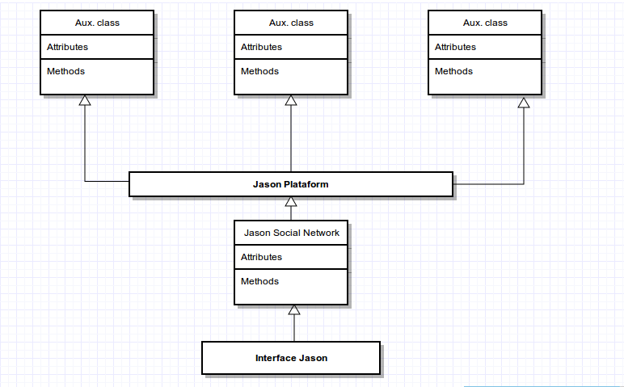
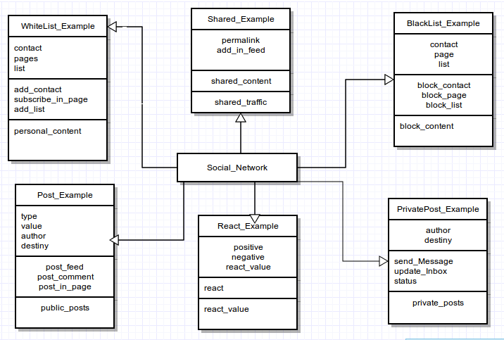

Jason is a Social Network architecture, with open source and manager by developers. Create in 2015 by Paulo Sérgio Duff, the origin name is connect in first version of Jason, reader tool JSON file by use in chat. The central objective is to enable people and companies to create their own social network.
The image illustrates the hierarchy of architecture.

The Jason is developed in PHP, but with is architecture is possible write Jason architecture in others language, like to C#, Python, and so on.
The image about, illustrates hierarchy model of basic social network to implements in Jason Architecture:

<?php
interface JasonCore
{
public function dataAccess($protocol, $type, $server, $dataBase, $user, $password); // Conection to data base
public function send_Menssage($protocol, $serverOrigin, $serverDestiny, $type, $autor, $menssage);
public function update_inbox($protocol, $serverOrigin, $serverDestiny, $type, $autor, $menssage);
}
abstract Class WhiteList implements JasonCore
{
private $contact;
private $page;
private $list;
public abstract function add_contact($serverOrigin, $serverDestiny, $contact);
public abstract function subscribe_in_page($serverOrigin, $serverDestiny, $contact);
public abstract function add_list($serverOrigin, $serverDestiny, $list);
}
abstract Class Shared implements JasonCore
{
public $permalink;
public $feed;
public $content;
public abstract function Shared_content($content);
}
abstract Class BlackList implements JasonCore
{
private $contact;
private $page;
private $list;
public abstract function block_contact($serverOrigin, $serverDestiny, $contact);
public abstract function block_page($serverOrigin, $serverDestiny, $contact);
public abstract function block_list($serverOrigin, $serverDestiny, $contact);
}
abstract Class Post implements JasonCore
{
public $type;
public $value;
public $author;
public $destiny;
public abstract function post_feed($type, $value, $author, $destiny);
public abstract function post_comment($type, $value, $author, $destiny);
public abstract function post_in_page($type, $value, $author, $destiny);
}
abstract Class React implements JasonCore
{
public $positive;
public $negative;
public $react_value;
public abstract function react($react_value);
}
abstract Class PrivatePost implements JasonCore
{
private $author;
private $destiny;
public abstract function send_Menssage($protocol, $serverOrigin, $serverDestiny, $type, $autor, $menssage);
public abstract function update_inbox($protocol, $serverOrigin, $serverDestiny, $type, $autor, $menssage);
public abstract function status();
}
?>